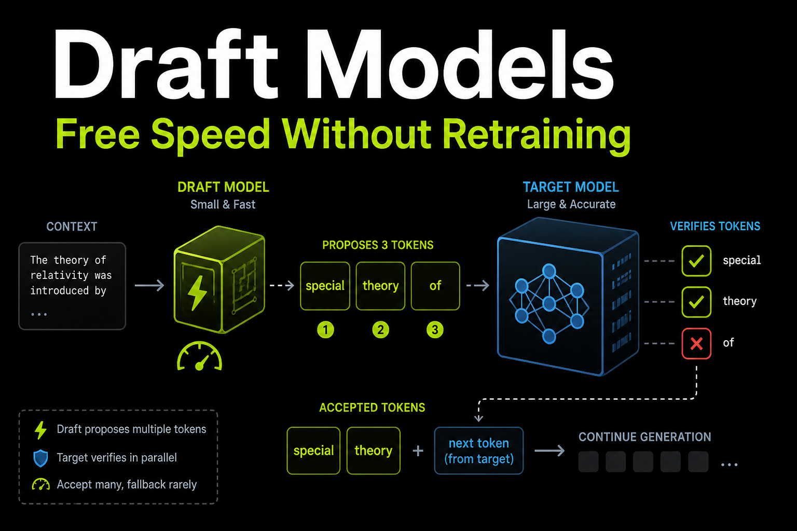
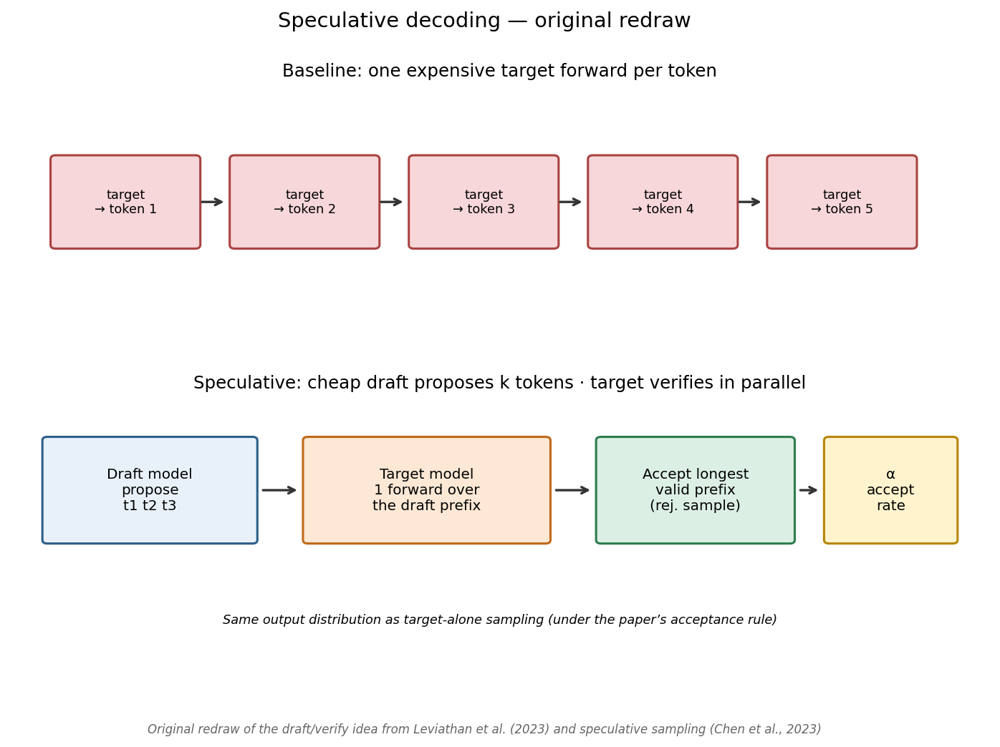
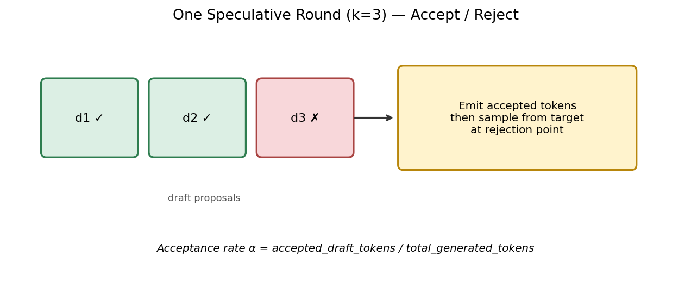
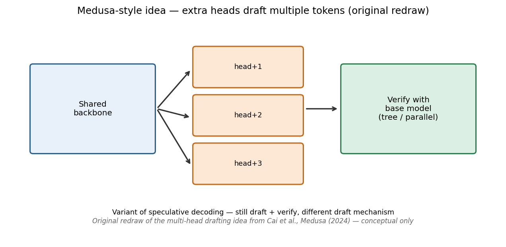
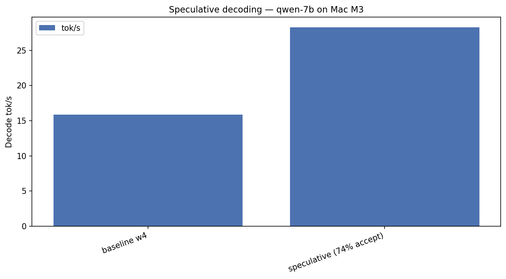
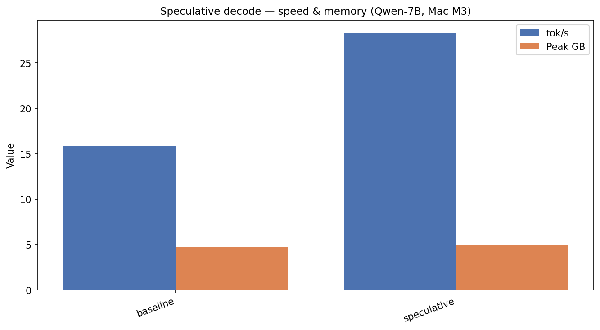
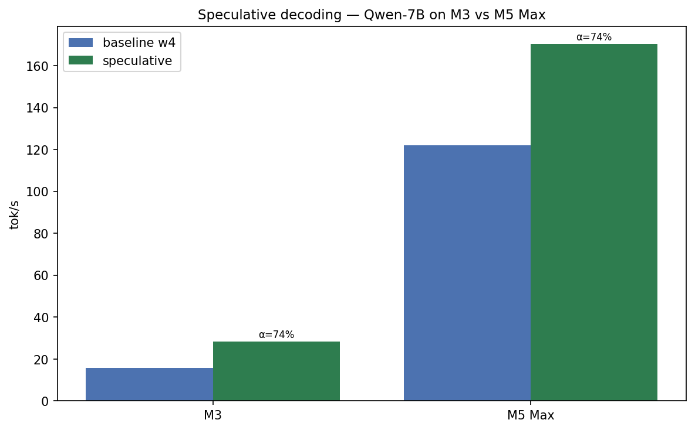
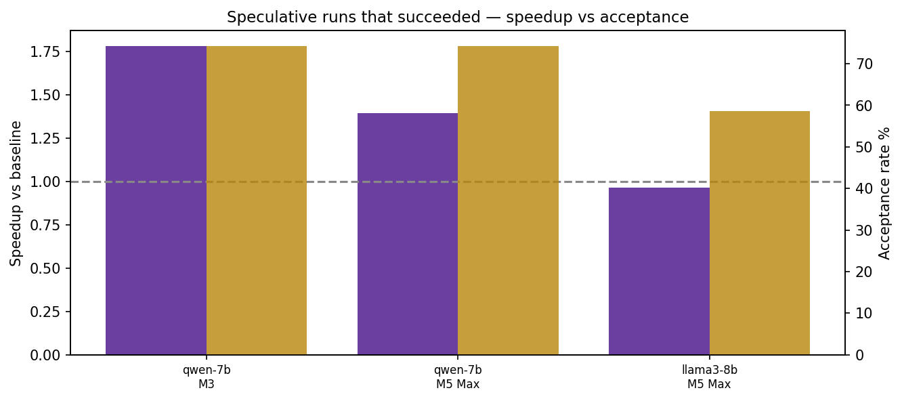

Local LLMs on Apple Silicon — Part 7 of 7
Draft Models: Free Speed Without Retraining
74% acceptance and 1.8× on Qwen — plus the case where speculation got slower
UPLOAD THIS IMAGE IN MEDIUM
../images/thumbnails/thumb_06_speculative.png
A small draft model proposes tokens. The large target verifies them in one parallel pass.
When the draft is right, you emit multiple tokens per expensive step — without retraining.
UPLOAD THIS IMAGE IN MEDIUM
../images/papers/leviathan_speculative_redraw.png
UPLOAD THIS IMAGE IN MEDIUM
../images/workflows/06_accept_reject.png
UPLOAD THIS IMAGE IN MEDIUM
../images/papers/cai_medusa_redraw.png
The clean win: Qwen-7B on Mac M3
- Baseline w4 — 15.9 tok/s
- Speculative (Qwen 0.5B draft) — 28.3 tok/s
- Acceptance α — 74.2%
UPLOAD THIS IMAGE IN MEDIUM
../images/06_speculative_qwen-7b.png
UPLOAD THIS IMAGE IN MEDIUM
../images/06_speculative_speed_memory.png
Honest failures
On M3, Llama and Mistral speculative runs errored (draft/tokenizer pairing / memory).
On M5 Max, Qwen still wins (122 → 170 tok/s). Llama speculative was slightly slower (113 → 110) at 59% acceptance.
UPLOAD THIS IMAGE IN MEDIUM
../images/06_spec_m3_m5_qwen.png
UPLOAD THIS IMAGE IN MEDIUM
../images/06_spec_speedup_vs_accept.png
Fun fact: Speculative decoding can make you slower if the draft is wrong too often. Measure α. Don’t assume.
Do this
- Same family + same tokenizer
- Tiny draft (0.5B–1B)
- Long generations
- Budget RAM for two models
./scripts/run_article.sh 6 "Mac M3"
← Part 6 · Bonus → Context, RAG & Prefix Cache